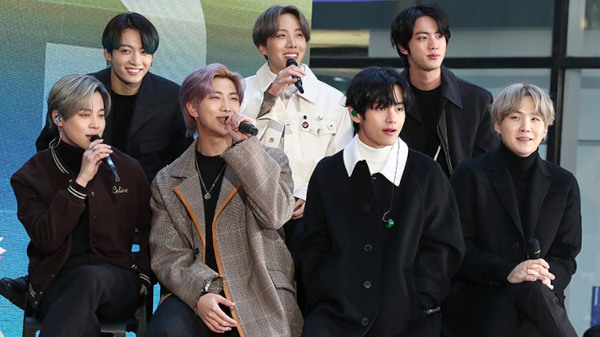
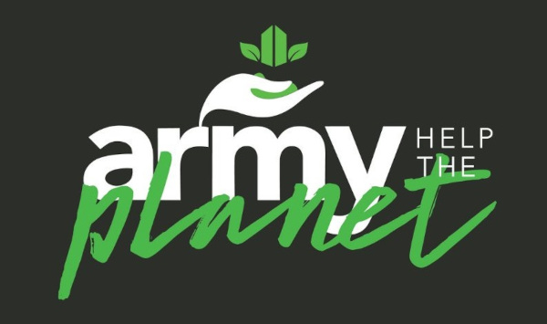

BTS: Projetos sociais feitos por Armys surpreende o mundo
O fandom do grupo coreano BTS destaca-se no engajamento de ações sociais e na promoção de arrecadamento. Reunindo forças para o bem, as armys são atualmente uma inspiração de coletividade, que fortalecido de amor pelo grupo coreano, resulta em atos filantrópicos.
O verdadeiro valor dos ARMYs se manifesta na maneira em que compartilham sua visão de mundo com o BTS, combinando o seu caminho com o do grupo. Isso é ilustrado perfeitamente pela campanha Love Myself, trazida pelo BTS e sua agência Big Hit Entertainment.
Love Myself é uma campanha que teve início em novembro passado com a intenção de promover o amor próprio e a empatia pelo próximo, fazendo da sociedade, à longo prazo, mais gentil e madura. Todo rendimento dos produtos da campanha oficial e 3% do lucro das vendas dos álbuns da série Love Yourself serão doados para a causa. Logo que o BTS faz o anúncio, ARMYs se movimentaram para promover a campanha globalmente. Como resultado, em seus meses, a campanha arrecadou um total de ₩ 1,154,600 bilhão (cerca de R$ 380 milhões) até maio de 2018, incluindo outros ₩ 500 milhões (cerca de R$ 1,7 milhões) doados pelo próprio BTS e sua agência.
Mas o que faz o fandom de um grupo querer se mobilizar em causas sociais?
Perguntamos a opinião de uma army que acompanha o grupo desde 2015 e sua resposta foi: Primeiramente porque eles [BTS] sempre falam sobre o próximo né, aprendemos com eles. E também porque o fandom é enorme e pode ajudar muita gente necessitada
(Miu Santos, 22 anos).
Outra army, que os acomapanha desde o debut, disse: Eles nos inspiram a ser a melhor versão de nós mesmos, tanto através de suas músicas, quanto em suas lives, e suas ações. Cada um deles já fez doações para causas importantes, eles fazem parte da campanha da unicef contra a violência, além disso, alguns deles até apadrinharam estudantes de baixa renda em suas cidades natal. Na verdade, constantemente eles fazem doações e o army não é diferente. É como eles mesmos disseram: eles nos inspiram e nós inspiramos a eles, é um sentimento mútuo.
(Talita Tortola, 26 anos).
Desta forma, se espelhando em seus ídolos, armys do mundo todo constantemente se envolvem em projetos sociais. Projetos como doações em dinheiro, campanha de doação de sangue e projetos voltados para o meio ambiente são alguns dos feitos organizados pelos fãs do grupo. Ainda que alguns dos feitos aconteçam de maneira aleatória, a maioria das campanhas acontecem de forma anual a cada aniversário dos membros que compõe o grupo, como um presente para eles.
Um exemplo disso é que, em comemoração ao aniversário de Min Yoongi (conhecido pelo nome artístico Suga), armys brasileiros se uniram para doar R$ 13 mil ao Instituto Cuida de Mim, que oferece tratamentos "multidisciplinares na área da saúde mental para a população carente", com ações voltadas à arte e à cultura, incluindo aulas gratuitas de violão, ballet, percussão e jazz para 150 crianças em condições de vulnerabilidade na Zona Leste de São Paulo.
Em 2019 no Brasil, por meio de uma ação para marcar o mês de aniversário do líder do conjunto, Kim Namjoon, armys plantaram centenas de mudas de árvores em Osasco (SP), E a data escolhida para o plantio de 400 mudas na região metropolitana de São Paulo não poderia ter sido mais apropriada: foi justamente no Dia da Árvore. Armys sul-coreanos seguiram a campanha ambiental e plantaram 1,2 mil árvores em Seul.
Mas por que o BTS causa tanto impacto?
O próprio grupo se envolve em causas sociais, sua demonstração de solidariedade com o mundo não passa despercebida, muito pelo contrário, encoraja e motiva todos a lutarem por um mundo melhor. Um exemplo claro foi em junho de 2020, onde BTS doou o impressionante número de 1 milhão de dólares para o movimento Black Lives Matter (Vidas Negras Importam)— valor esse que foi igualado pelos ARMYs ao redor do mundo em apenas 24 horas.
Assim como para o Black Lives Matter, o BTS também doou $ 1 milhão para a campanha da Live Nation, intitulada Crew Nation. O fundo foi lançado para ajudar equipes de apresentações de todo o mundo que foram afetadas pela pandemia da COVID-19. O fundo foi criado em março de 2020 para apoiar as equipes de shows que aconteceriam no mesmo ano e foram afetadas pela COVID-19. Mais de 70 pessoas que trabalhariam nos shows receberam o auxílio. Armys também fizeram suas doações para ajudar no combate à propagação do novo coronavírus na Coreia do Sul. A Associação Nacional de Ajuda em Desastres anunciou ter recebido mais de 400 milhões de wones (R$ 1,5 milhão) do fandom. A agência BigHit Entertainment cancelou os shows da turnê de Map of the soul: 7 em Seul por causa do alto risco de contágio no país. Assim, os armys usaram os reembolsos dos ingressos para fazerem suas contribuições. Durante um intervalo de cinco horas após a gravadora cancelar os shows, foram registradas 453 doações dos fãs dos idols RM, Jin, Suga, J-Hope, Jimin, V e Jungkook. A quantia recebida pela instituição nesse primeiro momento ficou em torno de R$ 72 mil. A atitude repercutiu e influenciou outros fãs a seguirem esse mesmo caminho.
Outras ações feitas pelo BTS
São inúmeras contribuições, aqui serão citadas algumas: Uma importantíssima aconteceu em 2017, para o Family Council do desastre marítimo conhecido como O Naufrágio do Sewol. Cada integrante doou ₩ 10 milhões (aproximadamente R$ 49 mil) e a Big Hit doou mais ₩ 30 milhões (cerca de R$ 147 mil). O Family Council apoia as famílias que perderam pessoas durante o naufrágio do Sewol Ferry em 2014, que resultou em 476 passageiros e integrantes da equipe mortos, incluindo 250 estudantes.
Outra contribuição que veio a público foi de SUGA, que doou ₩ 100 milhões (R$ 490.5 mil) para o fundo de desastres Hope Bridge, associado aos esforços para ajudar no combate à COVID-19 em Daegu. RM doou a mesma quantia para o Museu de Arte Moderna e Contemporânea de Seul para ajudar a espalhar as publicações da instituição nas escolas e livrarias sul coreanas.
Jimin, que é famoso por suas doações para causas escolares em sua província natal, doou uma quantia não revelada para a Escola de Artes de Busan comprar novas mesas e cadeiras. Anteriormente, Jimin já havia doado ₩ 100 milhões para a Secretaria de Educação da Cidade Metropolitana de Busan.
Jin ganhou reconhecimento ao longo dos anos por suas doações para a UNICEF. Em maio de 2019, ele foi cotado para se tornar integrante do Clube de Honra da causa, que reconhece doadores que dão mais de ₩ 100 milhões em um ano. O valor total doado por ele é de ₩ 280 milhões — equivalente a R$ 1.37 milhões — desde o início de sua parceria
, afirma o comitê coreano da UNICEF. As valiosas doações dele e de todos os outros do Clube de Honra estão ajudando a UNICEF a alcançar ilimitadas possibilidades que possuem um impacto genuíno e fazem a diferença para o bem estar de diversas crianças ao redor do mundo.
.
Jin também é conhecido por doar uma quantia não revelada à Associação do Bem Estar dos Animais na Coreia, em 2018, e fornecer 322 Kg de ração animal.
Outra doação notável de um integrante do BTS é a de ₩ 100 milhões de SUGA para a Fundação Coreana de Câncer Pediátrico em março de 2019. O rapper tem um vasto histórico de doações para organizações que ajudam crianças — em 2018 ele doou 10kg do caríssimo bife hanwoo para 39 orfanatos sul coreanos.
Doações feitas por J-Hope também são para ajudar crianças. Ele deu mais de ₩450 milhões (R$ 2,2 milhões) ao longo dos anos para a ChildFund Coreia em apoio à crianças não privilegiadas e para sua antiga escola em Gwangju, para ajudar estudantes que possuem baixa renda. Sua contribuição mais recente para a ChildFund Coreia foi de ₩100 milhões para ajudar àqueles que estão sofrendo com dificuldades relacionadas ao coronavírus.
Fonte: Bangtan.com.br
Campanha Army Help The Planet

Com o objetivo de conscientizar e discutir a respeito da preservação da Amazônia, o fandom do BTS em 2019 criou a hashtag #ARMYHelpThePlanet (Army ajude o Planeta), trazendo a importância de proteger a floresta amazônica, que naquele ano encontrava-se em constante destruição. A campanha criada por jovens brasileiros e divulgada no perfil @ARMY_HTP, visava movimentar as redes sociais em função de medidas ambientalistas e sustentáveis.
Mais de R$ 138 mil arrecadados para causas sociais, humanitárias e ambientais. Realização de mutirões de coletas de resíduos, plantio de árvores, visitas a hospitais e demais ações voluntárias. Esses são alguns dos triunfos do projeto ARMY HELP THE PLANET, criado em 2019 pelo fandom brasileiro do BTS.
O projeto, que reúne 60 pessoas, atua em pequenos grupos distribuídos pelo país, e está focado no desenvolvimento de ações de voluntariado e doações para diversas finalidades. E mesmo em tão pouco tempo, o ARMY HELP THE PLANET já contribuiu com causas de grande impacto na sociedade, alcançando grande notoriedade.
A partir daí, o projeto estabeleceu parcerias com grandes instituições, como o Greenpeace e a Fundação Oswaldo Cruz (Fiocruz), e começou a trabalhar em outras campanhas. Esse é o caso do “ARMY Contra a Fome”, focada na compra de cestas básicas em apoio às populações vulneráveis. O dinheiro arrecadado é destinado ao programa “Unidos Contra Covid-19”, da Fiocruz e já arrecadou até o momento 60 mil reais.
Fonte: Tracklist.com.br